| 日付 | 2023年6月9日（金） - 2023年6月10日（土） | ||
|---|---|---|---|
| 山域 | 越後 | ||
| メンバー | 単独 | ||
| 山行形態 | 前夜泊日帰り | ||
| アクセス | 車 | ||
| ルート (Map) |
|
2日目
5時起床。目の前の道路は車通りが多かった。
並行して走る高速道路が夜間通行止なのが影響しているかもしれない。
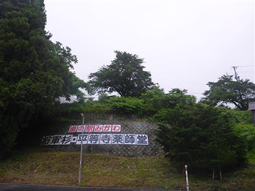
とてつもなくどんよりとした空。
御前ヶ遊窟に行くか、諦めて二王子岳に行くか、迷う。
雲に覆われると岩が濡れて滑りやすくなるし、ルートファインディングが難しくなるし、
落石にも対応しづらくなる。

日本一の巨木の案内が出ている。散歩がてら行ってみることにする。
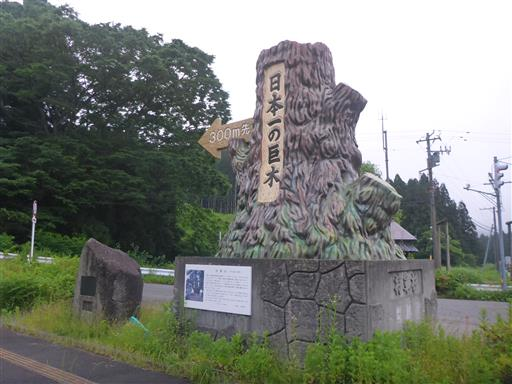
集落を抜けて行く。
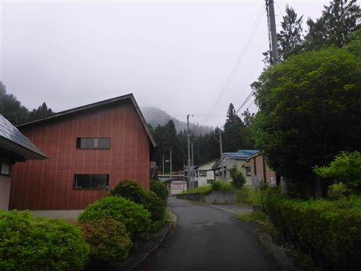
まずは平等寺薬師堂を見学。
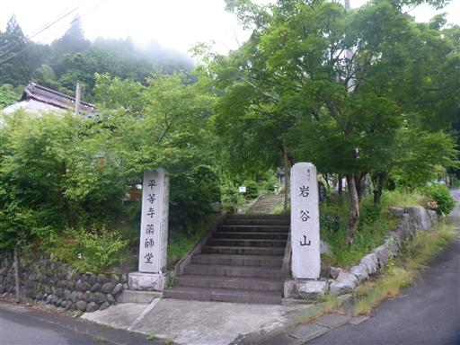
県内最古（1517年築）の木造建築で、重要文化財に指定されている。
美しい形の建物だ。
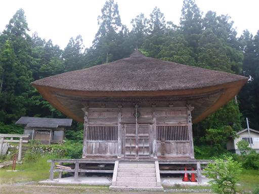
続いて将軍杉を訪問。
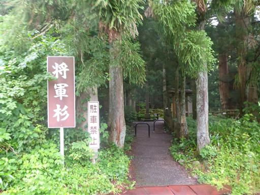
幹周り19.31m。とにかく巨大な杉だ。
縄文杉と違ってたくさん枝分かれはしているが、幹回りは縄文杉より大きい。
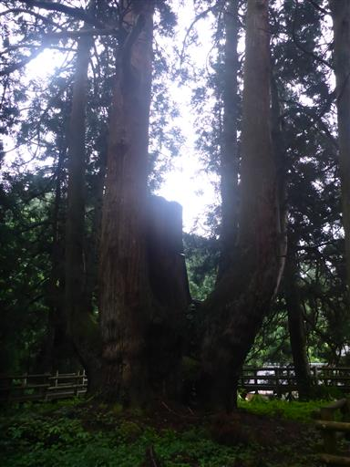
別の角度から。推定樹齢は1400年。
真ん中の幹は第二室戸台風で折れてしまったらしい。
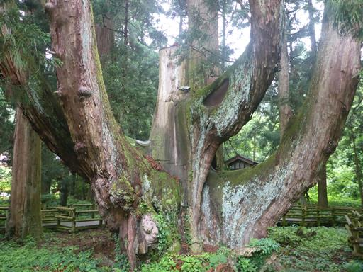
このあとコンビニに寄るため町に出たら、青空が見え始めていたため、
朝の雲は太陽が出たら消えると判断。御前ヶ遊窟に向かう。
山奥深くの登山口駐車場に車を停める。標高280m。
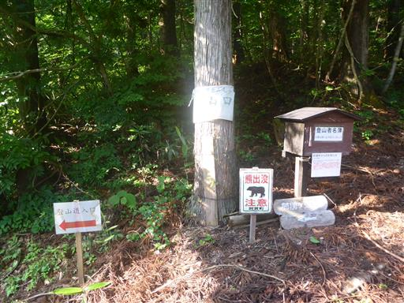
ここしばらく人が歩いた形跡がない道。
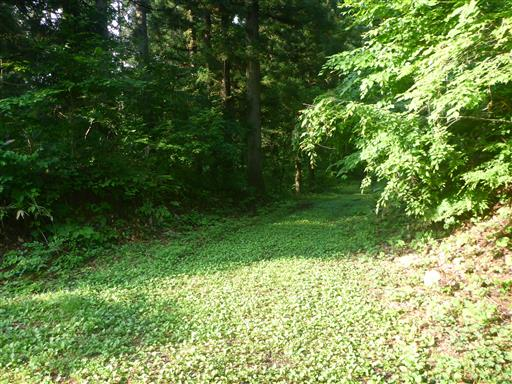
5分ほどで登山口に到着。
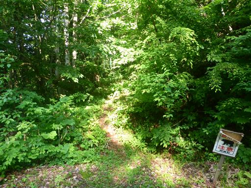
側にある注意書き。ひっくり返ってしまっているが、上級者向けと書かれている。
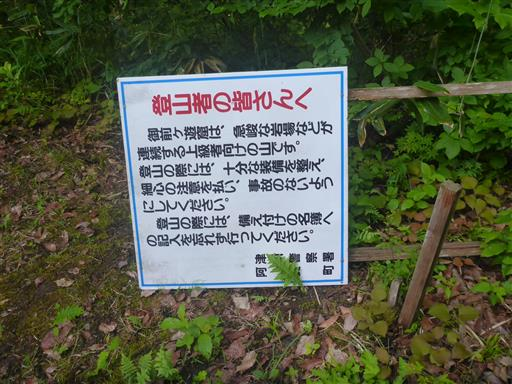
歩き始めてすぐにトカゲを発見。もう一匹のトカゲが噛みついている。
以前もこのような姿を見たことがあるので、帰って調べてみたら交尾中とのことらしい。
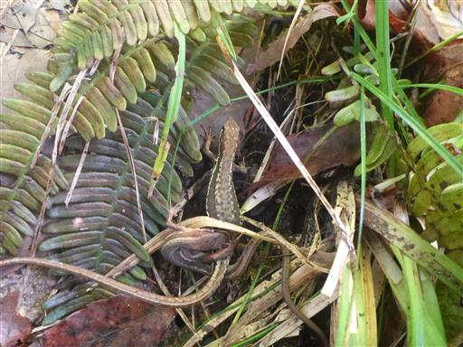
緑がきれいな道を歩いていく。
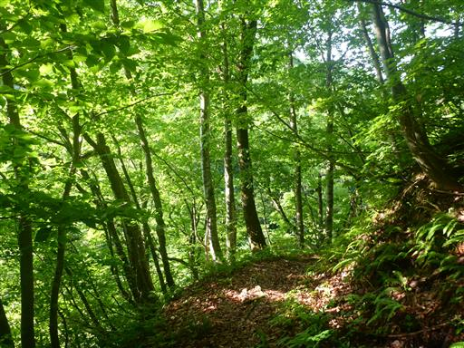
遠くにスラブ壁の斜面がある山が見える。
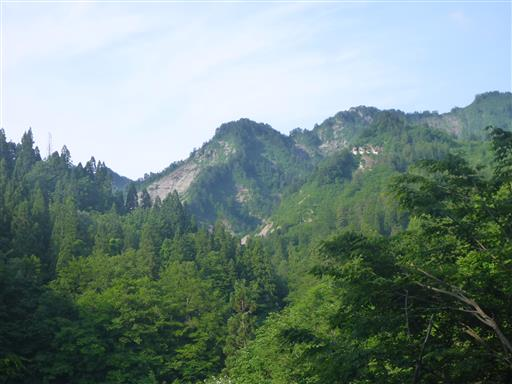
鍬沢を渡渉。昨日雨が降ったはずだが、水量はあまり多くない。
小ジャンプで余裕で渡れる。
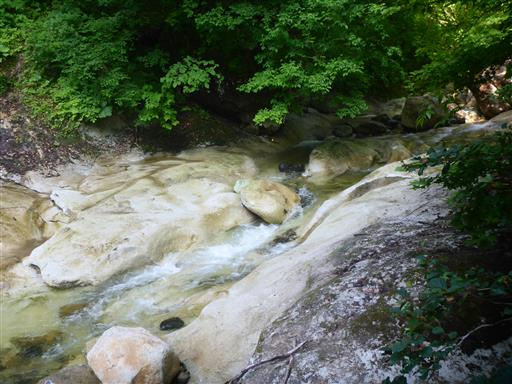
だんだん道が悪くなってくる。
濡れてドロドロの道、斜めになっている滑りやすい岩、
道に覆いかぶさった雨に濡れた草…

ソウケイ新道との分岐点。ここはまっすぐ行く。
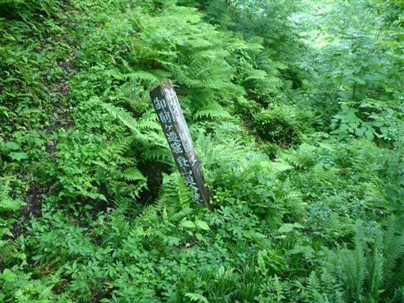
足元にはギンリョウソウが多い。

草に覆われた登山道。もう膝下はずぶ濡れだ。
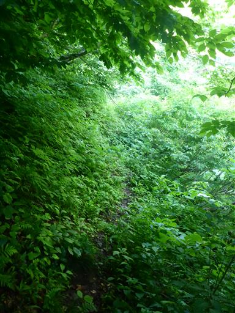
沢の対岸には見事な岩壁が見える。
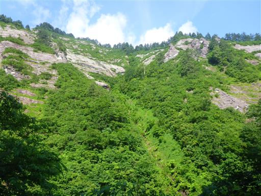
沢には小さな雪渓が残っている。
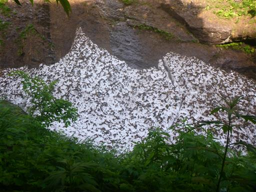
足元の鍬沢を覗き込む。小さな滝が見える。
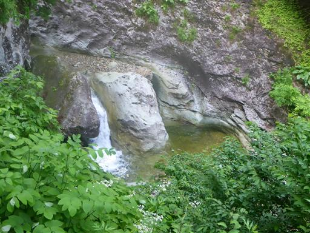
草ぼうぼうの道。足元を探れば踏み跡はある。
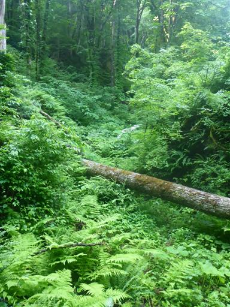
淵。ちょっと水は濁っている。
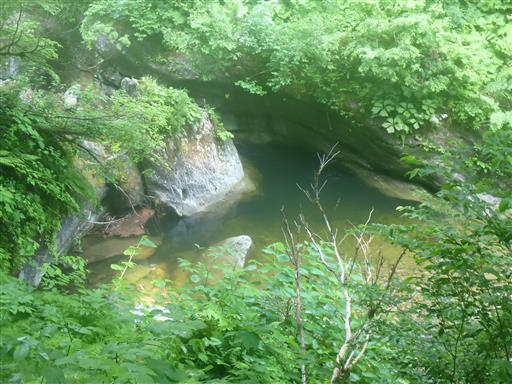
左から右に小沢が横切っているところで道が分からなくなった。
まっすぐ行ったら赤テープがあったが踏み跡が見つからず、
小沢を上ったり下ったり引き返したり、30分ほどウロウロするがどうしても登山道が見つからない。
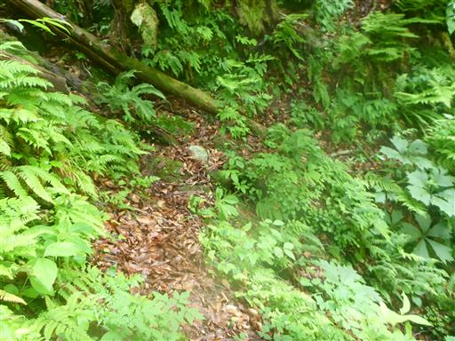
仕方がないので小沢を通って鍬沢に下りる。
ここから鍬沢を遡行することにする。

すぐ下流。このあと、もしこんな滝が出てきたら登れないので撤退と決める。
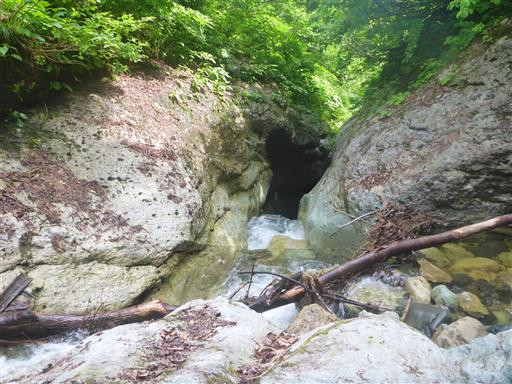
水量は少なく歩きやすい。最後は登山道が鍬沢を横切るはずなので、
順調にいけばそこで登山道に復帰できるはずだ。
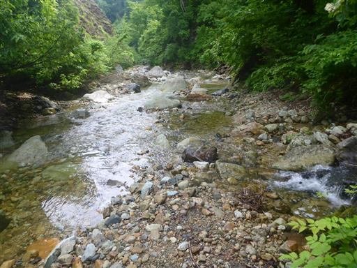
一箇所大きな岩を乗り越えるところがあったが、何とか進める。
この滝は右岸から回り込む。
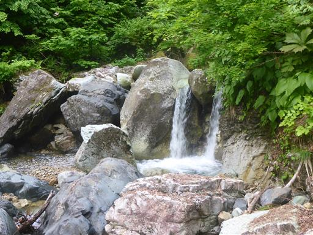
魚留の滝に到着。ここが登山道のシジミ沢出合だ。
なんとか無事辿り着けた。
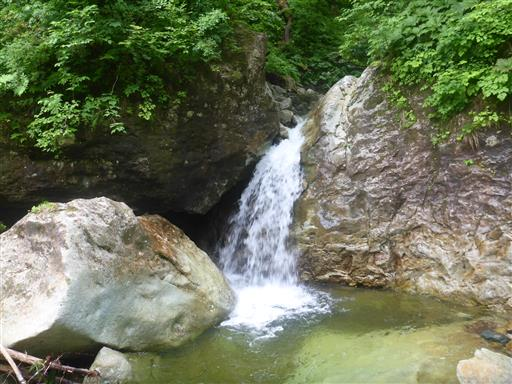
右手のシジミ沢。ピンクリボンがある。ここから登って行く。
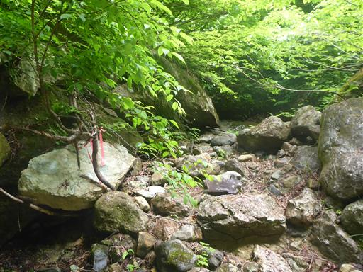
トラロープがあるが、とっても登りにくい道。
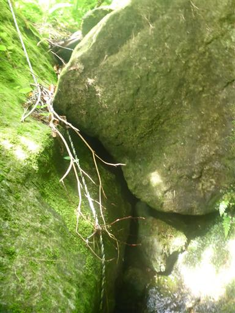
うーん、これ登山道？
登れなくはないが、正しいルートかどうか確信が持てないのが結構つらい。
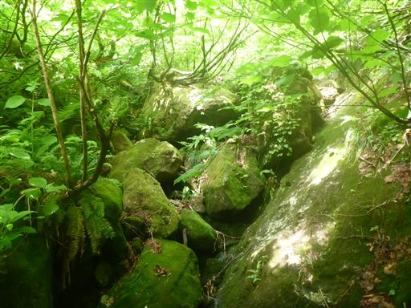
ようやく分かりやすい登山道に出てくる。
水がチョロチョロと流れているが、端を歩けばそんなに滑らない。
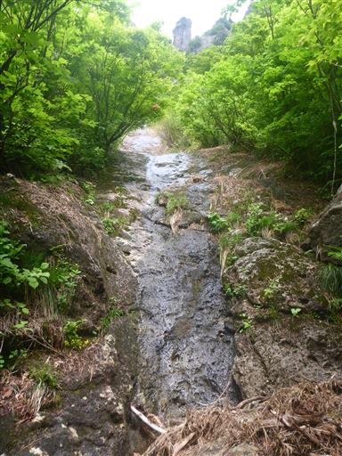
そして御前ヶ遊窟の大岩壁が目の前に広がる。
この景色を見るためにここまでやって来た。
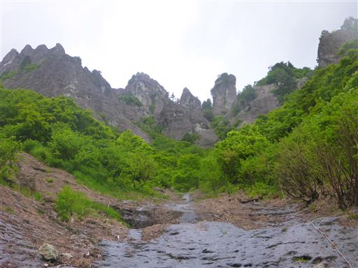
歩いてきた方を振り返る。
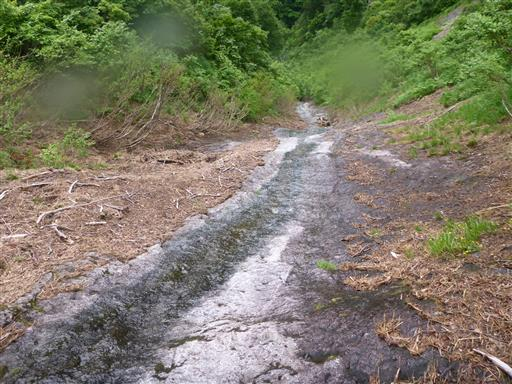
左か右か…
ひとまず登りやすそうな右を選択。
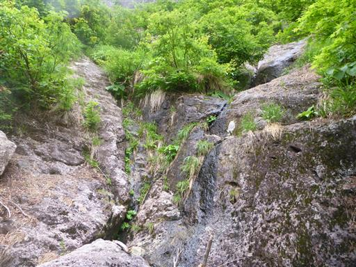
スラブ壁を登って行くが、なにか向かっている方向が違う。
右手を見ると、灌木の向こう側のスラブ壁に鎖が見える。
道を間違えたようで、仕方なく引き返す。
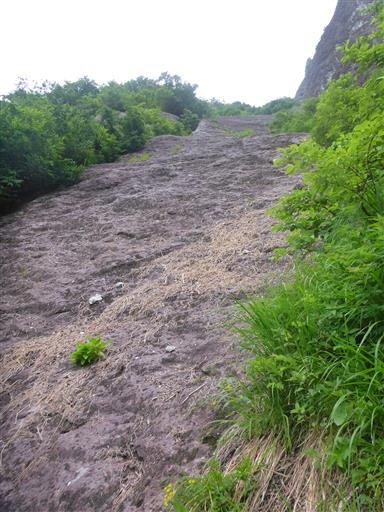
岩と灌木が入り混じっているので、結構ルートどりが難しい。
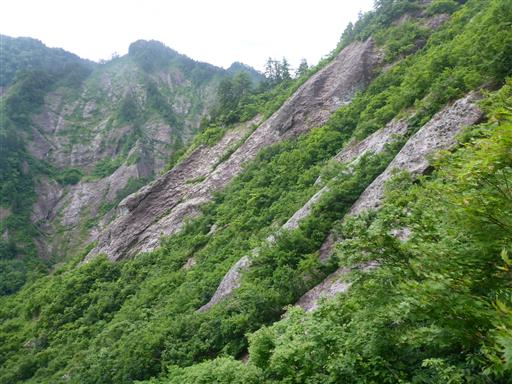
なんとヒメサユリを発見。ピンク色の可憐なユリだ。
見るのは初めてで、ずっと前から見たいと思っていた花だ。
この山でこの時期に見られるとは思わなかった。
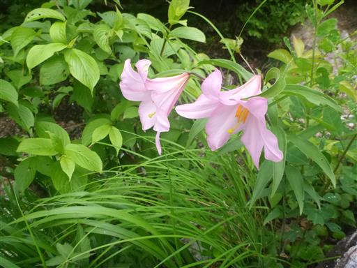
先ほど見えていた鎖場にやってくる。
傾斜が緩いので鎖があれば楽に登れる。
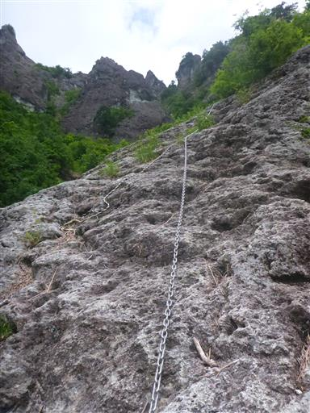
巨大な岩壁が近づいてくる。

傾斜がきついところは藪の中に逃げる。ところどころロープがある。
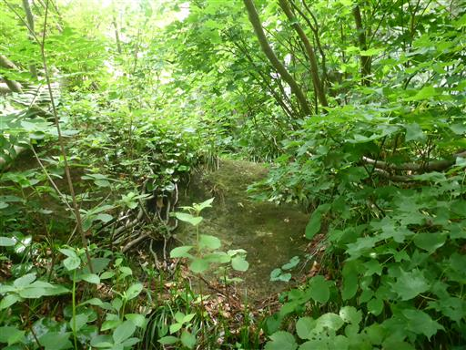
傾斜が緩いところはスラブ壁を登れる。
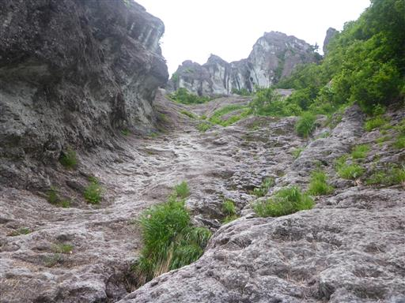
スラブ壁の中のあちらこちらにヒメサユリが咲いている。
他の登山記録を見るとこの山はほとんどの人が秋に登っているが、
初夏には人知れずヒメサユリがたくさん咲いているのだ。
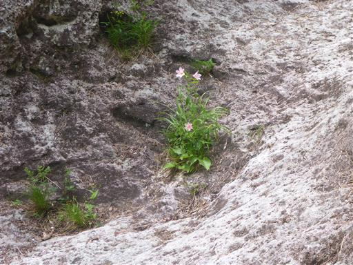
近くにある山の斜面。こちらも見事な岩壁。
豪雪地帯、越後の山の特徴だ。
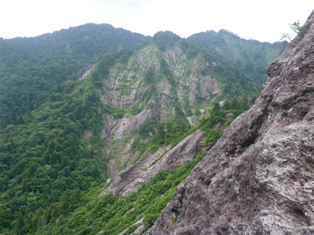
歩いてきた方を振り返る。
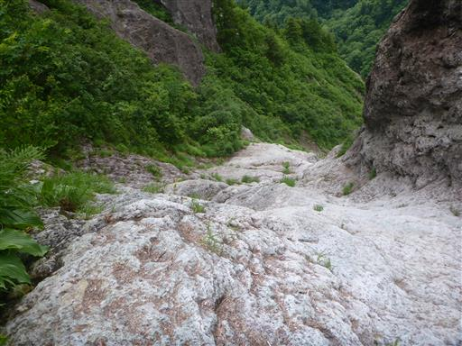
あと僅か。
ここからはスラブ壁を登って行くだけで容易にたどり着けるように見えるが
実際はそこまで容易ではない。
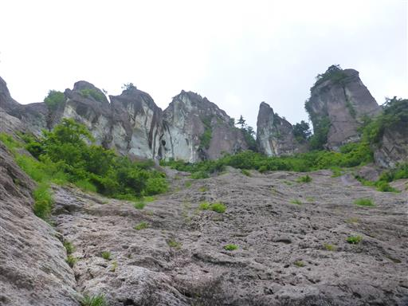
深い岩溝に木が生えている。まるでクレバスみたいだ。
左側に渡って登ってみるがそちらはルートではないようで引き返す。
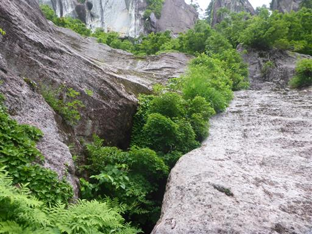
何と書いてあるか分からないが矢印っぽいものを発見。
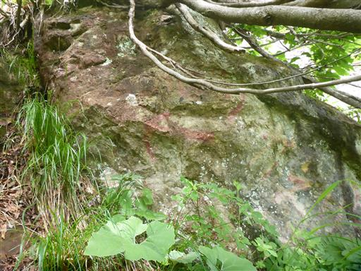
藪をかき分けると岩の麓にぽっかりと口を開けた穴が見つかる。
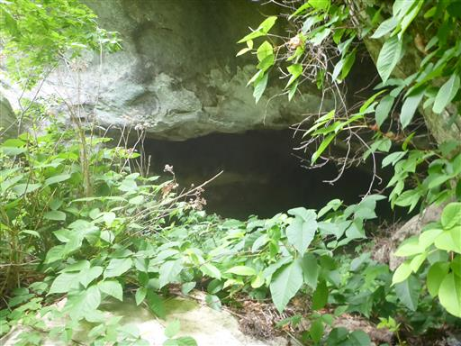
目指していた御前ヶ遊窟だ。ついに辿り着いた。
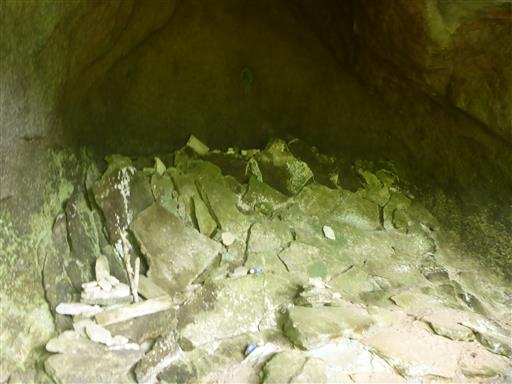
岩の奥には石仏が埋め込まれている。
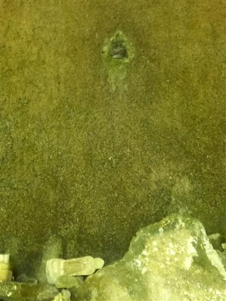
岩の穴から外を見る。案外展望は広がらない。
井戸小屋山は左方向だ。
陰気な洞窟を脱出。

ここから、もう少しスラブ壁を登る。
ルートを間違えなければ緩い傾斜を登れる。
左から大きく回り込むように登れば容易だ。
岩の上に小さな木が根を下ろしている。
御前ヶ遊窟の頭。あの岩の天辺を目指す。
この辺りにもヒメサユリ。

ウラジロヨウラク。花々が目を楽しませてくれる。
尖った尾根、深い沢。どこもかしこも急峻な山々だ。
稜線に到達。ここには明瞭な登山道がある。
御前ヶ遊窟の頭に到着。標高846m。
足元を見下ろす。真ん中に見える小さな沢からここまで登ってきた。
よく無事にたどり着けたものだと思う。
登山中に見えた岩峰群。ニョキニョキと林立している。
周囲は絶壁に覆われた山々。
こちらはこれから向かう井戸小屋山。
右手奥の飯豊山は雲に覆われている。左手奥は五頭山。
手前の尾根はこれから下山に使う尾根だ。
決して快晴ではないが、これだけの展望が広がれば満足だ。
腰を下ろして絶景を眺めながらおにぎりを食べる。
しかし、じっとしていると虫がどんどん集まってくるため長居はできない。
名残惜しいが山頂を出発し、下山を開始する。
松の幼木。可愛らしい。
御前ヶ遊窟の頭から井戸小屋山まではなかなかの岩尾根だ。
シロバナトキワハゼ？
コメツツジの花が咲いている。
岩場。難しくはないが、ちょっと岩がもろい。
歩いてきた方を振り返る。非常に展望の良い稜線だ。
周囲の展望を眺めながらのんびり歩く。
山頂直下の急斜面。
井戸小屋山に到着。標高902m。
こちらの山頂はほとんど展望が広がらない。
粗末な山頂標識がある。
さて、下山路が見つからない。正解は写真の真ん中を突っ切った先にある。
分かりにくいのは最初だけで、その後は明瞭な登山道になる。
途中で折れ曲がった巨木。
このような形の木はまれにみるが、ここまで大きく成長しているのは珍しい。
右手に岩峰群が見える。御前ヶ遊窟の辺りの岩峰だろうか？
林道に出てくる。
草ぼうぼう。進む方向が逆だったようだ。こちらの方が若干下りに見えたのだが…
ここも標識がなく不親切だ。
巨大なホオノキの葉。
立入禁止の林道から外に出る。
ここから道は少しグレードアップ。
この道もバリケードがある。なぜか規制中のようだ。
ほどなく、登山開始地点に戻ってくる。登山者名簿に下山時刻を記入する。
御前ヶ遊窟は思っていた以上に難しい山だった。
上級者コースと言うより完全なバリエーションコースで、
登山道を表す標識を設置するのも考え物だと思う。
そこまで難しい岩場がある訳ではないので、ルートに詳しい人と行けば容易に登れるのかもしれないが。
6月18日の山開きに合わせて、登山道が少し整備されるとありがたい。
ルートファインディングに気を取られ、のんびり楽しむという気分では登れなかったが、
四囲の眺望は素晴らしく、ヒメサユリをはじめ花々も目を楽しませてくれて、
達成感を得られた山行だった。